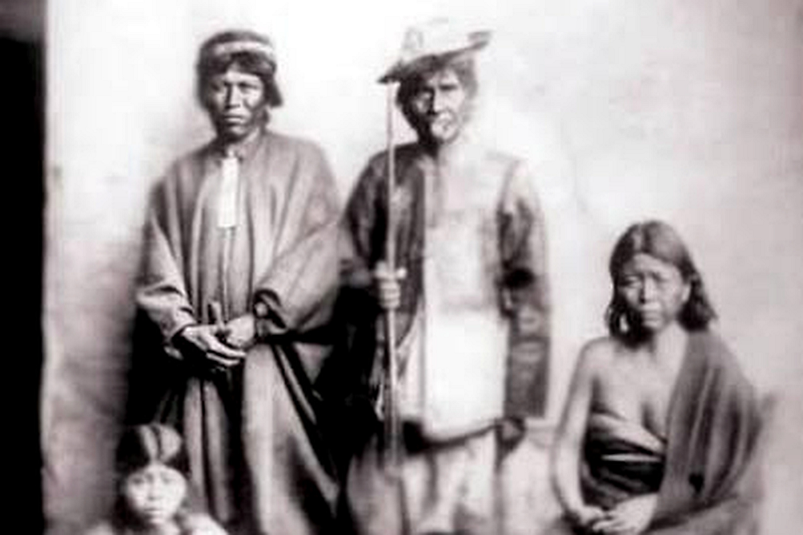

El añáchi de los Ava
Nota 026
Inicio > Blog Bitácora de un músico > Nota 026
Los Ava, un pueblo de habla guaraní de las tierras bajas de Bolivia y Argentina, preservaron una compleja tradición musical modelada por influencias amazónicas, arawak, andinas y coloniales, pese a siglos de guerras, desplazamientos e intervención misionera. Estrechamente vinculada a rituales como el aréte guásu, su herencia musical incluye tambores, flautas, trompetas, silbatos, idiófonos y el singular violín turumi, generalmente elaborados artesanalmente por los propios intérpretes e insertos en prácticas ceremoniales, sociales y simbólicas que articulan música, danza, memoria, sexualidad, guerra y relaciones entre vivos y muertos.
El añáchi es un silbato hecho con el hueso de una cigüeña, gallina o ciervo, cuyo nombre (también escrito añánchi) significa "demonio". Es propiedad exclusiva del imbaékwa, un hechicero malévolo que lo usa como cerbatana para lanzar sus hechizos.
Más información sobre estos artefactos sonoros puede encontrarse en el libro digital de acceso libre Instrumentos musicales de los Ava, accesible a través de la sección "Libros digitales sobre música. Serie 1".